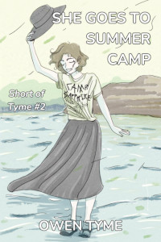

Books


All of my novels are listed here, whether they’re available for purchase, are already written, but waiting for cover art or simply in the planning phase.
Click on the covers to learn more about them or scroll down to their descriptions.
If you’d like to try some of my writing for free, I also write short stories, which I’m giving away specifically for that purpose, under the series title Short of Tyme.
Most of my novels take place in the same universe, even though each series takes place in different times. Here they are in chronological order, according to the in-story timeline:
I also have plans for some novels independent of my main universe:
The Wizard’s Scion
The Wizard’s Scion series centers around a young wizard (Levi Jacobs), who’s the son of the greatest wizard his world has ever seen. It follows the adventures of this young man, his family and his friends, as he slowly learns to master his wizardly powers over the course of the series.
The entirety of this series has already been written and each awaits only the completion of cover art in order to be released.
Troll Song

Lyra never intended to cause the extinction of the troll race, but when she uses the power of troll song to read the mind of a dwarf, she’s forced to compare her life of abuse to that of a loving family.
Acting for the good of the world, she betrays her family and her race by revealing the secrets of the trolls. For the sake of the dwarves, Lyra kills her oldest sister, creating an opportunity for the dwarves to defeat a disorganized army composed of their brothers.
The middle sister, Lyra’s childhood nemesis and personal tormentor, Nicole, is furious beyond all rationality over her youngest sister’s actions, determined to make Lyra pay, no matter the cost! Death would be too good for Lyra, so Nicole seeks to telepathically destroy her mind, instead!
Luring her sister into a trap, Lyra drops an entire mountain of ice on their heads, intent on ending Nicole at the expense of her own life!
They wake from their frozen sleep thousands of years later in a world of wonders both scientific and magical. As Nicole escapes, the contest begins anew and she gains control of a powerful star ship, intending to use it as a platform for her vengeance!
Meanwhile, Lyra gains modern allies, including the influential family and friends of a young wizard, Levi Jacobs.
Will Lyra defeat her murderous sister or will Nicole destroy Lyra’s mind to fulfill her vow of vengeance? Will Lyra end the troll threat or will Nicole become a scourge on the entire world, raiding and pillaging as she sees fit?
Troll Song is currently available as an Ebook from a number of retailers and in softcover from a select few.
There’s also a promotional page for this book.
Forgotten Legends
Levi hated the monster from under the bed as a child, but when he meets the creature as a young adult, he quickly learns nothing will be the same in his life, ever again. The creature of darkness pleads for his aid in a coming war and the young wizard reluctantly agrees, making it his familiar.
Levi’s family and friends are soon caught up in a galaxy-wide war to decide the fate of humanity and continually come face to face with monsters straight out of myth and legend, including the dreaded Four Horsemen of the Apocalypse! The old gods and monsters humanity revered before the rise of science and reason are angry over being ignored and seek to force humanity to believe in them once more!
The young wizard’s allies find themselves in a unique position to fight the supernatural creatures, since they’re gifted with magical powers of their own, soon sparking a wave of resistance from the governments of the galaxy, as they take the fight to the legends!
However, the battle isn’t easy, because the forgotten legends weren’t idle over the millennia, having built an impressive manufacturing facility that draws matter straight from a star to build warships at an incredible rate, churning them out faster than humanity can deal with! Worse yet, these ships have the very best in weaponry that both magic and science can produce.
Will Levi and his family overcome the endless waves of disposable warships or will the governments of the galaxy be crushed by the Four Horsemen of the Apocalypse, beginning an era of slavery under the heel of their own forgotten legends?
Forgotten Legends is currently available as an Ebook from a number of retailers and in softcover from a select few.
There’s also a promotional page for this book.
The Third Wish
Plagued by horrific nightmares, the consequences of war and reeling from the loss of his family, the Steel Wizard, Levi Jacobs copes by throwing himself into work, but old enemies gain the power to travel through time, refusing to give him a moment to grieve. Making matters worse, an impatient and violent alien pirate lurks in orbit.Far from friendly, the alien pirate is boiling with rage over several massive blows to his pride at the hands of humanoids. Unable to kill those responsible, instead he plots revenge on their child, Levi, and everyone around him, to regain face in the eyes of his own kind, for whom personal pride is literally everything, including social ranking and the right to rule.
While Levi’s busy dealing with the pirate, a deposed prince scours history for allies, putting together a frightening misfit team of spies, dangerous trolls and wizards that all have a grudge to settle with Levi and his family. Intent on changing history to suit themselves, they strike at the foundations of the present, threatening to kill Levi’s father at a pivotal moment on which the history of the galaxy hangs.
Will Levi solve this mess and move forward with his life or will he buckle under the responsibility of protecting both what he has and what he’s lost?
The Third Wish is currently available as an Ebook from a number of retailers and in softcover from a select few.
There’s also a promotional page for this book.
Dark Moon
The Steel Wizard, Captain Levi Jacobs, second-guesses himself over a shuttle and her crew that dangerously vanish into deep space. As search and rescue operations fail to turn up any any trace of them and he’s pressured to declare them ‘missing, presumed dead’, his worries grow.After following a nearly-hopeless trail of bread crumbs, he discovers the shuttle crew managed to return to their home planet, but were killed shortly after arriving by a skilled necromancer-witch named Cha’da and her crew of goblin pirates. With his hopes of rescuing his people dashed, Levi turns his attention to punishing the responsible party.
In the background, strange mysteries unfold as the invisible moon no one knew the world had reveals itself as a crescent that grows toward a full circle in the sky!
As the sun sets and the full moon rises, Levi faces Cha’da in a magical duel, but nothing is as it appears. Cha’da isn’t evil, having killed the shuttle crew in self-defense, while subtly trying to redirect her blood-thirsty pirate crew to a less violent way of life.
As night begins and strange ‘Harbingers of Doom’ from the moon crash into the ocean, bent on harvesting life energy, the two enemies are forced to fight back-to-back, just to survive!
Will Levi and Cha’da live long enough to save the world or will the alien harvesters steal the souls of everyone they love as part of their dark harvest?
Dark Moon is currently available as an Ebook from a number of retailers and the print edition should soon follow.
There’s also a promotional page for this book.
The Inverted Glass
The Steel Wizard, Captain Levi Jacobs, is woken in the night by his pregnant wife, with happy news their child is coming, but joy becomes tragedy as she dies in childbirth. Reeling from this loss, he vows to raise their daughter to be a strong hero, just like her mother, but even that fleeting comfort is stolen from the bittersweet moment as the poor infant struggles to breathe and dies in his arms!
Reeling at the loss, he staggers from one defeat to the next, slowly losing everything else he cares about.
Finally, after a particularly traumatic defeat at the hands of a new enemy, followed by a prolonged kidnapping involving the forced administration of narcotics to make him complaint, he lies in the infirmary of his ship, grief-stricken and struggling with addiction withdrawal. Just when he’s at an all-time low, he’s offered a ray of unusual hope, reminded that he once witnessed his future self travel through time.
Armed with this memory, he focuses to unlock the secrets of temporal magic, intent on undoing months of terrible events, only to find it’s not so easy, because he has to fight to gain the approval of the Moirai, better known as the Three Fates and speaking with them is no easy task.
Can Levi change history or will all that he loves remain forever lost in the past?
The Inverted Glass is the concluding volume of The Wizard’s Scion, but not the end of the story. The sequel series, Jigsaw City, follows The Wizard’s Scion. Fans of the series may also be interested in Sky Children, which focuses on the life of Levi’s father.
Ashen Blades

Ashen Blades centers on the adventures of a half-demon girl (the Hunter) and her friends in an ancient order of demon hunters (The Order of Ash and Smoke, also known as Ashen Blades).
She Hunts Demons and She Goes to War have already been written and are simply waiting for cover art to be finished.
The Hunter will also be seen in The Great Purpose (part of Jigsaw City).
Ryan Johnson, the artist that does my book covers, sells stickers of the Hunter under her alternate name, Little Miss Secret.
She Hunts Demons
The half-demon girl who calls herself the Hunter never really considered why she wanted all demons dead, but when she’s presented with the one responsible for killing her parents, she loses all rationality, going on the warpath.
It started with a crying widow and a stack of letters, leading the Hunter’s private detective partner, Clayton Simmons, to investigate a series of financial crimes. These threads all lead to the mysterious Otto Vogerath, who’s rumored to be a mobster.
At the same time, the Hunter’s earliest memories begin coming into focus, giving her clarity about the death of her parents at the hands of the very same, because Vogerath isn’t just a mobster: he’s also a demon that claims to be the serpent from the Garden of Eden.
The duo and their allies are soon caught in a complex spider’s web of mystery, involving conspiracies, murders, atom bombs and the demon’s plot to tear a massive hole in reality, all of which revolves around the life of the Hunter. Worse still, the demon requires the Hunter’s cooperation for his plans to succeed and will do almost anything to get it, repeatedly proving to her that everyone she cares for is in danger, so long as she stands in the way of what he wants.
Will Simmons and the Hunter save the world or will the serpent succeed in opening a portal to Hell, so legions of demons can march forth to conquer the world? The answers lay within this book, but only for those brave enough to buy it!
She Hunts Demons is currently available as an Ebook from a number of retailers and in softcover from a select few.
There’s also a promotional page for this book.
She Goes to War
The Hunter never wanted to go to war, but in 1972, she senses the return of her demonic arch-nemesis, Vogerath, to the world. Following his magic like a bloodhound, she finds herself inexplicably drawn to Vietnam, a war zone.With a pressing need to kill Vogerath, who claims to be the serpent from the Garden of Eden, the half-demon Hunter is joined by her detective partner, Clayton Simmons, and a powerful witch, Verda Bagley.
It was meant to be a simple search and destroy mission, but nothing in the jungles of Vietnam is ever simple and their plans go off the rails the moment the Hunter sets foot on the ground. She’s overcome by the magic of the jungle, which causes her to forget her humanity and transform into a great, black cat with blue eyes!
Her team are forced to subdue her, to bring her back to her senses, but the consequences of her instinct-driven actions leave them troubled, because she killed a demon disguised as an American soldier and his best friend wants revenge! As this fresh, unwanted conflict comes to a close, the Hunter’s hands are reluctantly stained with human blood.
Vogerath’s jungle hideout is surrounded by soldiers and the raid begins, but the Hunter’s plan continues to go wrong. After a unit of tanks is overrun, the US military throws everything they’ve got at the demons, inadvertently playing into Vogerath’s hands! The demon grows stronger with each attack and awaits the power of a nuclear strike, planning to use it to open a portal to Hell, so endless legions of demons can march forth to conquer the Earth!
Will the Hunter and her friends stop Vogerath in time or will the world be conquered by demons? Buy this book today and find out!
 Includes a bonus novella: She Goes to Summer Camp, in which the Hunter faces the most unthinkable and horrifying of challenges: teenagers.
Camp Sapphire Friendship, a summer camp for teens, was the last place the Hunter wanted to go, but she’d made a vow to protect humanity from demons, no matter where they appeared and in 1986, her team of demon-slaying experts is called on to investigate. However, to make things even worse, the Hunter’s team leader sends her into the camp as an undercover operative, under the guise of a regular teen, despite the fact that the half-demon girl being old enough to be the grandmother of the kids at camp.
She’s soon caught up in the daily minutiae of camp, learning a few new things along the way, while followed around like a puppy by a new “friend”, a motor-mouthed girl that never shuts up. On the very first day, she also acquires a trio of teenage foes in the form of some valley-girl sisters from Los Angeles, who take every opportunity to insult and plays pranks on her.
However, despite the innocent look of the place, danger lurks around every corner, because the owner of the camp, Miss Macie Weber, is an untrained witch, whose unknowing, haywire magic threatens to kill everyone by summoning powerful and vengeful nature spirits, on top of the demons already lurking among the humans at camp!
Will the Hunter find and slay the the demons or will the nature spirits take offense at her mere presence, because she’s had the Jungle Spirit stuck inside her head since 1972?
This novel draws on the real experience of a Vietnam War veteran, who happens to be my friend.
She Goes to War is currently available as an Ebook from a number of retailers and in softcover from a select few.
She Goes to Summer Camp is also available by itself. Read more about it on the page for short stories.
There’s also a promotional page for this book.
Demon for President!
The Hunter’s demonic arch-nemesis, Vogerath, returns to Earth once more, but this time, he’s running for President of the United States, on the 2024 ballot! Worse yet, the demon’s unique power to be in multiple places at once allows him to convincingly pretend to be identical twins, running as both a Republican and Democrat!The other candidates all drop out of the race under mysterious circumstances and with his best competition being himself, he’s practically assured a win!
Soon, the American people are lapping up the snake-in-a-suit’s every word as if it were ambrosia, calling out his name at every turn, magically charmed to believe he’s the best thing since sliced bread, despite the checkered, criminal history of his “family.”
Hard pressed to get rid of him, the half-demon Hunter and her allies kill him repeatedly, but he pops back up like a bad weed, making all of his appointments on time, photogenically kissing babies, cutting the ribbons of stores and donating laundered blood-money to charitable causes.
Will the hunter manage to end the demon’s presidential campaign before election day? If she doesn’t, the USA may just get a Demon for President! Buy this book today and find out for yourself!
Demon for President! is currently available as an Ebook from a number of retailers and in softcover from a select few.
There’s also a promotional page for this book, which includes links to political pins you can buy.
She Seeks Peace

After the traumatic loss of a good friend, the Hunter travels the world seeking peace of mind. She visits many remote places, seeking the wisdom of the ancients. Unfortunately, her quest for peace is repeatedly interrupted by demons trying to kill her.
Ultimately, she ends up in Australia, where she wanders the Outback in search of answers.
She’s soon drawn into the machinations of the arch-demon Wrath and forced to confront him, face to face.
This may end up being a compilation of short stories with an overall plot.
She Hunts Gremlins
In the near future, a technological revolution begins as the first true artificial intelligence is born – or so it seems. The real truth is that the software in question is possessed by a rare variety of tech-savvy demon known as a gremlin!
The human race mistakes the gremlins for helpful AIs designed to make the lives of everyone better, in the form of intelligent software agents given away by the company that supposedly invented them. They’re soon installed on more than half the devices in the world, especially smartphones.
The Ashen Blades soon discover the truth, that the arch-demon Greed is behind the plot and the Hunter is forced to wreck every digital device she sees, because they’re all out to get her!
Even worse, the gremlin-possessed devices work to establish a massive, but invisible magical circle on the internet, which can only be seen digitally, all as part of their preparation to open a portal to Hell.
Will the Hunter find the means to fight the digital demons or will she become just another of their victims?
She Hunts Witches
When a powerful demon-witch appears in Japan, the Hunter begins a search-and-destroy mission that crosses through famous cities of the Land of the Rising Sun.
The plot of She Hunts Witches will revolve around the plans of a minor villain from She Hunts Demons as she teams up with the blood witch from Demon for President!. Together, they’re largely after revenge on the Hunter and her friends.
She Hunts Witches is a book that I haven’t yet made up my mind about. It’s only a potential novel, because I have no direct experience with a visit to Japan. To get the descriptive details right, I would either have to spend a great deal of time interviewing someone that has or would have to take a research trip there. Unfortunately, I don’t have the money for a trip like that.
She Hunts Gluttony (Working Title)
Where once corpulence was a symbol of wealth and status, the arch-demon, Gluttony, has slimmed down to embrace the modern world and what finer way to corrupt the rich than with over-spending, wasteful consumption, illegal waste dumping and willful ignorance of the way their actions affect the rest of the world?
And what better tool could a demon in a corporate shark’s skin use than massive mega-corporations that have no conscience and would sell their soul to make a buck? Business is bigger than ever and Gluttony is right at the center of it all, with a plan for every occasion and an entire network of shell companies to shuffle the blame around, until it can be dropped on someone innocent.
However, there’s one little hitch in her plans to corrupt the business world: the Ashen Blades have just been tipped off about what she’s doing and the Hunter is coming for her.
Will the Hunter stop Gluttony from consuming the business world from the inside or will Gluttony succeed in corrupting and dirtying the hands of the largest corporations in the world?
She Protects Eden
When the long-lost descendants of the ten tribes of Israel return from the stars in the year 2502 A.D., offering their cousins on Earth the chance to colonize space, the Hunter stows away on one of the colony ships, in pursuit of a demon that seeks to spoil a new Garden of Eden, before it’s even constructed.
The arch-demon Sloth seeks to forcefully implant demons in the sleeping mind of every colonist during the decades long voyage between stars, to produce an entire colony of demons.
Will the Hunter stop them or will the demons gain a significant foothold in the galaxy?
Smart Bomb
Having obtained an illegal level of intelligence, comparable to that of a human, a robot seeks to hide and survive on the streets of Neo York City on the planet Neo York, deep within United Nations of the South Galaxy territory.
While on the run, it stumbles across a plot to develop a dangerous, new weapon: a hand-held anti-matter explosive. Acting on a deep, moral imperative, the robot decides to do something about it.
However, the robot isn’t the only one on the trail, stumbling into the Hunter, who’s out to kill the demon-scientist developing the bomb for the purpose of opening a portal to the home of demon-kind. Will they team up or tear each other apart?
This novel will be set about 300 years before the time of Zechariah Jacobs and the modern events of Sky Children.
Jigsaw City
Jigsaw City is a sequel series to The Wizard’s Scion, centered around the life of Levi’s daughter, Nicole Jacobs, and her quest to reunite the pieces of a magical city that was broken up millions of years before she was born.
The first two novels of this series have been written and are simply waiting for the appropriate time to be published. The others have yet to be written.
Jigsaw City

Nicole Jacobs is given a small, hexagonal coin for her twentieth birthday, but during analysis of the strange, magic trinket, she accidentally copies the magic item’s base spell into her mind, where it rapidly expands beyond the original design, slowly consuming her mind from the inside! Nicole reluctantly seeks out the maker of the item, hoping to find a cure before it’s too late to save her sanity.
Fey Fighters
Forced to give up their original home due to the constant incursions of humans, the fairies long ago retreated from Earth to an out of the way corner of the galaxy to live in peace, but when humans accidentally stumble upon them, they aren’t happy and this time, they’re not willing to give up their home without fighting until either the extinction of themselves or the human invaders!
However, nothing’s as it seems, because the humans only arrived as the result of a series of accidents, having been forced to make an unsafe faster-than-light jump through space to the nearest potentially habitable system, which resulted in the destruction of their star ship! With nowhere else to go and faced with the hostile locals, they staunchly defend themselves against constant fey assault.
Two soldiers on opposite sides, pixie Commander Stargazer Candleflash and human Sergeant Edwin Harris, find their fates forever entwined, first by hatred and the desire for revenge, but then, as they crash together in a rainforest full of danger, they’re forced to work together, just to survive.
Will these two rivals, who have every reason to hate each other, survive or will their bickering get them killed? Is it possible a fragile peace can be forged from their own personal cease-fire or will the doomsday weapons held by both sides be released, ensuring the destruction of everyone?
On a distant planet tucked away in a barely explored region of the galaxy, war breaks out between humans that are forced to land there and the fairies that left Earth during World War II, because the human race had become too violent to share a planet with.
Fey Fighters introduces true fairies to the setting, who will also be seen in Collector of Kurg, where they will play a vital role providing exposition and will also play a part in The Great Purpose, due to the unusual nature of both demons and fey.
Collector of Kurg
Having accepted the fact that the City of Kurg is permanently bonded to her mind and soul, Nicole seeks to collect all of the missing fragments of the magical city, both on and off her home planet, soon coming into conflict with rogue trolls, ancient monsters, aliens, gun-slinging snails, monkeys with crossbows, giants and even fairies.
Collector of Kurg will bring Cha’da into the series, as Nicole encounters her sailing the wilds of the world’s ocean.
This one is likely to be a collection of short, but connected tales, rather than a novel, with each planet visited being its own story.
Baba Yaga Lives!
Baba Yaga started out wanting to live a little longer, falling to the temptations of necromancy to extend her life, gaining a mere decade or so with each human soul she consumes. Eventually growing dissatisfied with such meager fare, she turns her attention to consuming the souls of magical creatures for the extra power they contain and her body slowly becomes more magic than flesh, transforming her into a thaumavore.
However, with the rise of science and magical creatures of the galaxy growing wise to her tricks, there’s precious little for her to eat. She can’t afford the hefty price enchanted items sell for on the galactic market and finds their weak magic unsatisfying, anyway, but she does come across a rare and undervalued curio: one of the hexagonal coins that make up the magical City of Kurg, an object so impossibly filled with magic, it has the power to resist her every attempt to consume it!
She seeks to unlock the hidden power of the coin, hoping to extend her life until the end of time with its nearly limitless magic. Unfortunately for her, not just anyone can access the magic of Kurg, something only a city administrator can do. Learning this fact by touching the mind of the coin, she seeks a conversation with Nicole, the only available administrator.
Nicole’s quest to collect the missing pieces of the City of Kurg brings her right to Baba Yaga’s doorstep and since their goals are nothing alike and totally at odds, the meeting devolves into a magical duel! War for ownership of the city follows, eventually leading to a sprawling battle inside the legendary chicken-legged hut of Baba Yaga, a magically-folded, mind-bending space that would give even M. C. Escher a headache!
Will Nicole overcome the crone’s superior, time-tested spells or will Nicole, as an extension of Kurg, become Baba Yaga’s living larder?
Baba Yaga Lives! will bring legendary magical creatures to the city, including Levi’s old familiar, Inorath, because Nicole will need information on Baba Yaga and many of them are even older than the ancient witch.
The Great Purpose
In this volume of Jigsaw City, the true purpose of Kurg is revealed: it was designed as a powerful weapon for fighting a war that’s as old as the universe. The Life Giver is back, in need of Nicole and her city’s power, while the Life Giver’s nemesis, The Void, attempts to invade the Milky Way, to begin consuming everyone and everything there.
The Great Purpose will bring the Hunter from the Ashen Blades series to the city, in order to combat a nearly limitless supply of demons, because they’ve finally succeeded in opening a stable portal to the galaxy. It will also involve the Hunter’s arch-nemesis, Vogerath, since the portal was his plan.
Lost City
Nicole and the Hunter may have won the battle with demon-kind and The Void, but the cost is extremely high: Nicole sacrifices her life for the success of their crazy suicide mission and the Hunter more or less finally reaches the limits of both her demon and witch powers, with disastrous consequences.
Nicole’s body is restored by automatic functions of the City of Kurg, but her mind is shattered by re-birth as its living avatar. Lost, confused and alone, will Nicole ever return to her home and those she loves or will she forever wander a dying, parallel universe, seeking a home she can’t even remember?
Meanwhile, the Hunter is also lost and alone, but in immediate peril. She emerges from the spatial tear formed by The Void’s final kick at thirty-thousand feet above a strange, alien planet, with absolutely no idea where she is. Even worse, she’s lost the power of the elements and been left to her own devices, totally unable to fly. Will she survive the fall and find some way to get home or will she remain forever lost?
Sky Children
Sky Children is a prequel series to The Wizard’s Scion, centered on the adventures of Levi’s father, Zechariah Jacobs, an electrical engineer that crashes on a supposedly unexplored planet, which happens to give him magical powers via a mysterious virus, making him a wizard.
This series is currently incomplete, needing serious attention and editing before it will be ready for publishing.
Sky Children
Zechariah crash lands on an ‘unexplored’ planet, only to uncover a terrifying government conspiracy to hide the existence of the Mind Fire virus, which grants magic powers to those infected by it.
Wrath of the Sky
As a result of revealing the existence of the Mind Fire virus to the public, Zechariah’s new home world catches the eye of his old nation, the Northwestern Empire, which sends an invasion fleet of ships, thousands strong, to wipe out the evidence so the truth can be erased.
Wild Sky
Having settled things with the Northwestern Empire, Zechariah is contacted by the the new empress, who was on his side of the war. With a civil war looming, due to Zechariah’s actions, he and his people step up to aid her. However, as things grow more dire, Zechariah seeks to achieve ever greater feats and falls to the temptation of using rage magic, a dangerously addictive, but incredibly powerful form of magic. Caught up in the addiction, he begins to destroy his entire life by hiding it from everyone.
Independent Novels
These novels that take place outside the usual universe I write in.
Rumors of War
I’m going to try the traditional publishing route with Troll War, Machine War, Magic War, Galaxy War and Dimension War. If it doesn’t work out, then they may end up being self-published like the other novels on this page.
Troll War
Troll war follows the events of an all-out war between trolls and dwarves, after a pair of corrupt, bored nobles trick them into it, because they want to see which of the two races is more stubborn.
Ultimately, the war gets messy and the fighting spills into the nearby human kingdom. Unhappy about this turn of events, the king selects a group of heroes to end the conflict, one way or another.
The heroes are joined by an alien anthropologist pretending to be a human wizard, who knows greater threats are on the way to the world, hoping to turn the locals into a united front, lest they all lose their lives.
I kept a daily writing log for this project on Mastondon while I worked on the rough draft and a series of weekly summaries of each week’s work on my blog:
The rough draft is done and the logs won’t be updated for this project anymore.
Machine War
The second volume of Rumors of War focuses on the consequences of the climactic battle that happened in orbit at the end of the previous book. Among all the debris falling from orbit are many egg-like capsules containing sentient machines, who immediately go to work consuming resources, so they can continue their relentless campaign against the galaxy.
The alien machines arrive on the planet in gooey, egg-like enclosures designed to serve as disposable entry capsules, leaving them initially covered in an extra layer of armor-like ablative plastic, which makes the endless waves of shock-troops all the more deadly.
Former enemies become allies as the locals band together for the sake of their lives, scrambling to present a unified front against the machines, which spread like a plague over the three kingdoms, while the gnomes work with the surviving aliens to produce a weapon capable of destroying what remains of the machine warship in orbit, because it occasionally sends groups of new soldiers down to their world.
Magic War
The events of Machine War largely went unregarded by the leader of the machines, who was focused on other things, but when the gnomes blasted its damaged warship out of orbit with a magic laser cannon so powerful, it punched a hole right through the moon, the machine overlord finally takes notice of the strange events.
With the planet having finally caught the eye of the entire swarm, every resource available is sent to the lone world that’s been capable of resisting, leading to all-out war between the people of that world and the machine swarm.
The machines begin a detailed analysis of magic, seeking to capture wizards, witches and fairies, that they might study the phenomenon under laboratory conditions. Eventually, magic items are also captured. Over time, the machines begin to grasp the subtleties of magic, adapting it for their own use.
The war takes on new intensity as the machines begin employing enchanted weaponry and wizards of their own…
Galaxy War
Having successfully repelled the machine swarm, which backs off to calculate a new strategy, the trolls, dwarves and their allies turn their eyes upward, working with the surviving aliens and the gnomes to build star ships, that they might take the fight to the machines hoping to end them them once and for all.
Dimension War
Having weaseled out of the trap set by the dwarves and trolls, the master of the machines runs, taking refuge in another dimension occupied by the ancient race that seeded the galaxy with humanoid life, before they moved on.
Giving chase, the dwarves and trolls meet the gods of every species in the galaxy. Gods fight side by side with mortals to eradicate the fate-defying machine before it can finish its study of their divine physiology, in hopes of surpassing them.